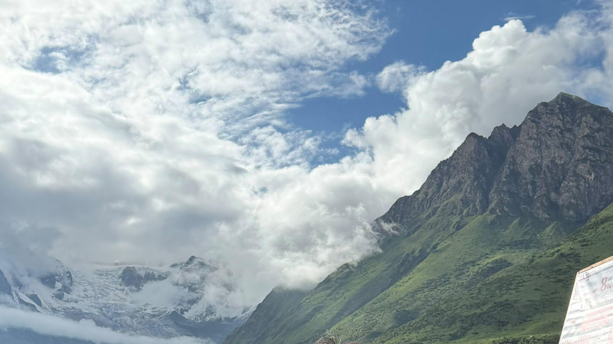
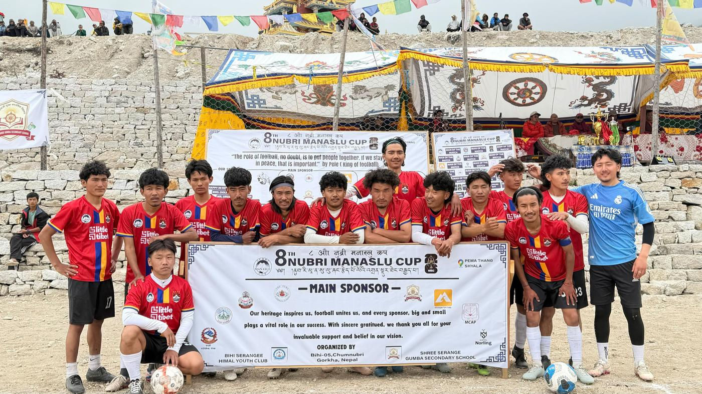

Chapter I · Our story
Before it was a team,
it was a village.
Samdo sits at the edge of the Nubri valley, a day's walk from the Tibetan border and higher than most clouds. Everything here is built on the same idea: nobody carries the mountain alone.
The village
Long winters. Short summers.
Samdo Village is one of the highest settlements in the Manaslu Conservation Area, home to a close-knit community of yak herders, traders, and families who have lived along this trade route for generations.
Winters are long. Summers are short. And every year, football gives the village a reason to gather that has nothing to do with the harvest or the herd.

- Village elevation
- 3,875 m
- Nubri Manaslu Cup titles
- 5
- Cup edition in 2026
- 8th
- Founded
- 2016
“When Samdo plays, the whole village stops to watch — the ones on the pitch, and the ones who never left.”
How it began
No academy. No federation.
Samdo FC was not founded by an academy or a federation. It was founded around a flat patch of ground, a borrowed ball, and a handful of young people who wanted their village's name to travel further than the trail to Samagaun.
- 01
A flat patch of ground
- 02
A borrowed ball
- 03
A handful of young people
- 04
One wish: to carry the village's name further
Football above 3,800 metres
Thin air. Thick loyalty.
There is no artificial pitch, no floodlights, no substitutes bench flown in from the city. Just a team that trains where the oxygen is thinner and the stakes, somehow, feel higher.